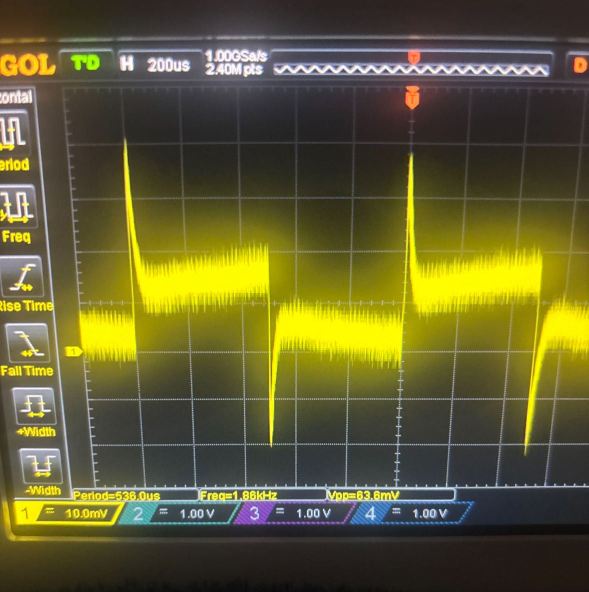
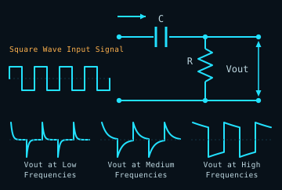
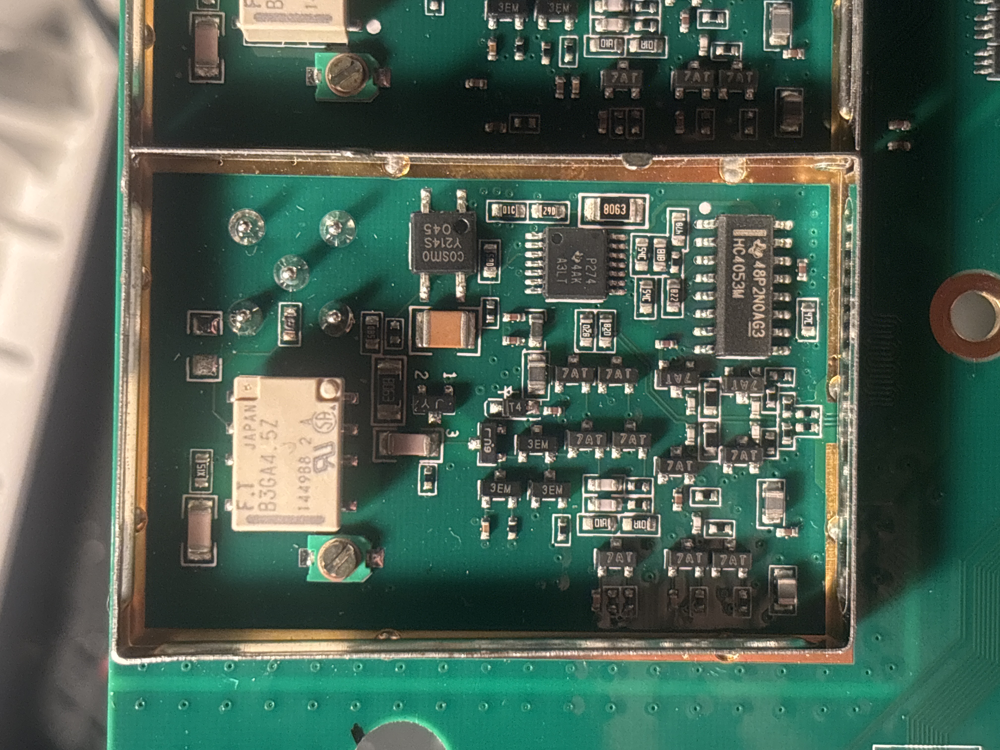

Pinched wires

Repaired and heat shrunk wires
This DS1054Z Oscilloscope was displaying a fuzzy, distorted, and poorly attenuated waveform on all 4 channels using known-good probes. I fed in a 1 kHz square wave from the probe compensation posts and noted that the resulting waveform looked exactly like a high-pass filter output.


Upon disassembling the oscilloscope, I immediately noticed pinched wires in the area where the main harness was fed through the power supply EMI shield. Luckily, the insulation was still intact and the damaged power wires hadn't shorted to ground.
While this was still a critical repair, the same waveform pictured above appeared when I retested. So my next step was to isolate the analog board, inject my 1 kHz test signal, and see if I could trace it from the center pin on the BNC jack through the attenuator circuit.


Signal injection at the BNC center pin revealed a differentiated sawtooth waveform. This strongly indicated the presence of an open or excess impedance condition within the input signal path. Closer examination of the series resistor directly after the BNC under a microscope revealed catastrophic physical damage. Upon measuring with a multimeter, I verified that the resistor was indeed failed open. I repeated this test across all 4 channels and recieved identical results.


With the failed resistors identified, I carefully desoldered them, cleaned the area thoroughly, and replaced them with 82Ω 1% 1/10W SMD resistors. I then injected my test signal and verified that a good square wave was now present beyond the jack into the attenuator circuit.


With the new resistors installed and connections verified, I powered the scope back on and ran test signals into all four channels. Each channel properly displayed a clean 1KHz square wave. Problem solved!